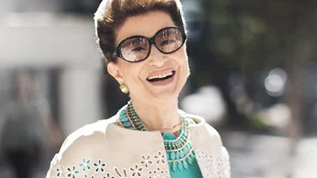

Sobre Constanza Pascolato
Costanza Maria Teresa Ida Clotilde Giuseppina Pallavicini Pascolato é uma empresária e consultora de moda brasileira, nascida na Itália. Integrante da Sociedade Brasileira de Moda. É um dos nomes mais influentes e respeitados do universo da moda.
O que você tem todo mundo pode ter, mas o que você é... Ninguem pode ser.
Historia da Constanza Pascolato
Quando falamos sobre o cenário brasileiro da moda, é impossível não citarmos Costanza Pascolato, não é mesmo? Considerada uma das mulheres mais influentes e elegantes do país, aos 81 anos, a empresária e consultora de moda segue sendo fonte de inspiração com seu estilo, sabedoria e personalidade única.
Nascida na Itália em 19 de setembro de 1939, Costanza mudou-se para o Brasil aos cinco anos de idade, com seus pais Michele e Gabriella Pascolato, para fugir da Segunda Guerra Mundial. Em 1948, Michele e Gabriella fundaram a tecelagem Santaconstancia, empresa que a filha assumiu em 1987, após a morte do pai. Hoje, a tecelagem é uma das maiores empresas brasileiras da área têxtil.
Apesar de ter vindo de uma família da aristocracia italiana, Costanza passou por grandes desafios. Em 1962, casou-se com o banqueiro Robert Blocker e, juntos, tiveram duas filhas, Consuelo e Alessandra. Separaram-se em 1972, após a empresária se apaixonar pelo marquês italiano Giulio Cattaneo della Volta, com quem viveu por 21 anos. A separação causou grande polêmica na sociedade da época e Costanza foi deserdada pelos pais, além de perder a guarda das filhas.
Em 1989, enfrentou uma depressão profunda e, em 1990, Giulio, o grande amor de sua vida, faleceu vítima de um infarto. Em 1993, Costanza descobriu um câncer de mama, doença que enfrentou novamente vinte anos depois, em 2013.
Tendo passado pelas maiores revistas de moda do país, Pascolato se tornou um ícone fashion e segue inspirando pessoas de todas as idades. No livro A Elegância do Agora, a papisa da moda traz diversas memórias de sua vida e dá várias dicas de estilo. Confira, abaixo, um trecho da obra publicada em 2019:
“Não consigo me imaginar saindo malvestida de casa. É como chegar atrasada a um compromisso. Gosto de me apresentar de forma correta, dar o melhor de mim: é um rito de autorrespeito, um gesto de apreço e consideração por quem vou encontrar e pelo próprio dia que tenho pela frente.
Posso estar morrendo mas eu faço. Posso acordar com preguiça, cansaço, não importa. Faço tudo que me determinei a fazer para atravessar cada dia da maneira mais simples e sofisticada possível. Não quero me afastar de mim mesma a esta altura da vida.
Prestar atenção em nossa aparência não nos torna superficiais. Mais um mito a ser demolido, tão ultrapassado como a ideia de que estilo depende de gênero, beleza e juventude. Prestar atenção em nós é deixar o lugar de vítima - inclusive da moda.”